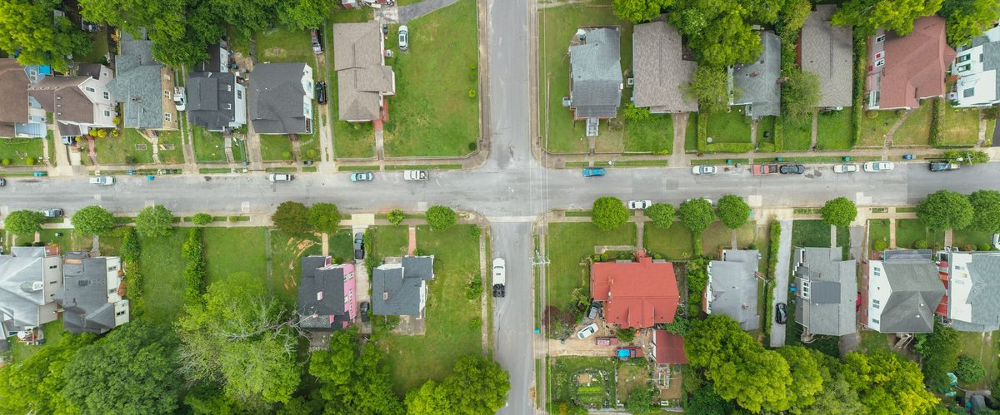

The traditional storm route is simple: drive to the nearest neighbourhood with a broken skylight and start knocking. It is also how three crews end up on the same cul-de-sac by ten in the morning.
The best door-knocking route after a hailstorm starts with the homes that took the biggest hail and have the oldest roofs, grouped by block and put in driving order, with a fixed number of doors per person per day. Plan it from the storm data the night before, not from wherever the truck is parked. Then make sure every door you knock is one you are allowed to knock.
Where should you start knocking after a hailstorm?
Where hail size and roof age overlap, not where the storm was most famous. A twenty-year-old roof under moderate hail is usually a better first knock than a three-year-old roof under bigger hail, because the older roof is far more likely to need replacing and far less likely to have a roofer already.
So the first job is a hail map with homes on it, and the second is knowing each home's roof age. Re-roof permit records are the cleanest source. A home with fresh hail and no permit on file in the last decade or so goes near the top.
How do you turn a hail swath into a route?
A swath is a shape on a map. A route is a list a person can walk. Five steps get you from one to the other:
- Cut the swath down to homes. Drop fields, commercial lots and anything outside the area you actually serve.
- Score each home. Hail size first, roof age second. Keep it simple enough that anyone on the team can explain why a house is on the list.
- Group by block. Twenty good homes spread across a city is a day of driving. Twenty good homes on four streets is a day of knocking.
- Put the blocks in driving order, starting closest to where the person begins the day and looping back, not zig-zagging.
- Cap the list. Give each person a fixed number of homes, so tomorrow's list is the next best homes rather than the leftovers.

What should you say at the door?
Less than you think. Homeowners have been warned about storm roofers, often on the evening news, so the first thirty seconds are about being clearly legitimate:
- Your name, your company, and your state roofing license or registration number where your state has one.
- Why you are on their street: the storm date and the hail size reported nearby.
- One offer: a free inspection, booked for a time that suits them.
- Nothing about deductibles, and no promises about what an insurer will pay.
Then leave something with your name on it. Most people will look you up before they call back, which is why the website and Google profile behind the knock matter more than they look. We wrote up what a roofing website needs with exactly that homeowner in mind.
Check whether your city requires a solicitor or peddler permit, respect any no-soliciting sign, carry identification, and keep a list of homes that asked you not to come back so nobody on the team knocks them twice.
What rules apply to follow-up calls and texts?
Knocking is local rules. Phoning is federal and state rules, and they are stricter than most crews assume. The federal Telemarketing Sales Rule limits sales calls to between 8 a.m. and 9 p.m. in the homeowner's time zone, set out in 16 CFR 310.4, and numbers on the National Do Not Call Registry are off limits for cold sales calls. Several states set tighter windows of their own. Texas, for one, allows telephone solicitation only from 9 a.m. to 9 p.m. on weekdays and Saturdays and from noon on Sundays, so check yours. Automatic texts to people who never asked for them are a fast way to a lawsuit.
We build our own system tighter than the minimum: a person makes every cold call, never before 8 a.m. or after 8 p.m. and always inside any tighter window your state sets, no more than three calls a day to any home, and stop means stop. Automatic texts and emails only go to homeowners who signed up on your "Was my house hit?" page, and to your past customers. This is how we run it, not legal advice, so have your own counsel look at your state.
How Roof Command builds the route
Roof Command does the night-before work for you each morning. New hail is checked over every home in your service area, the hardest-hit homes with the oldest roofs go to the top of the Daily 50, and the worst streets become door-knock routes in driving order, with Call, Text and Skip on each home. Your company name and license or registration number go on every message. The person on your team still does the knocking. The list just stops being a guess.